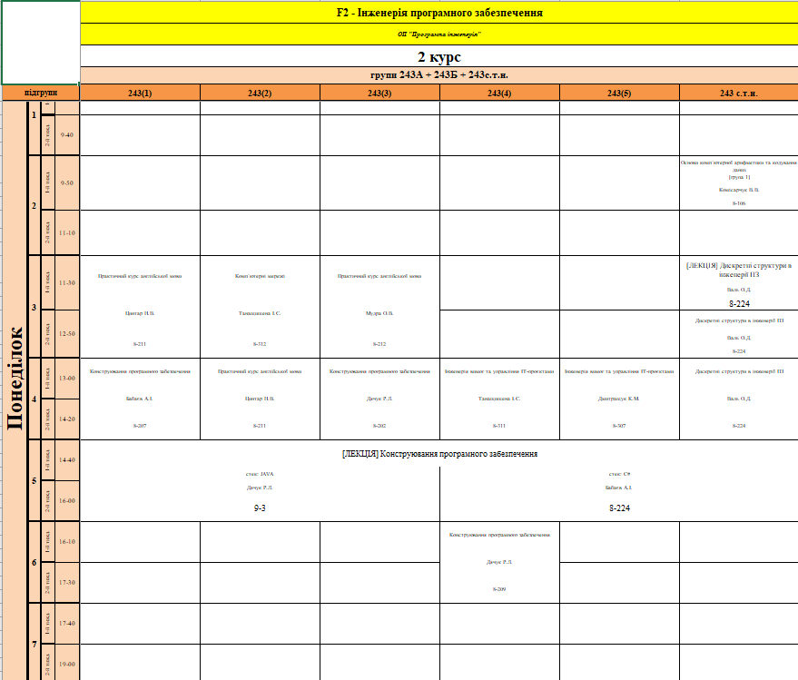
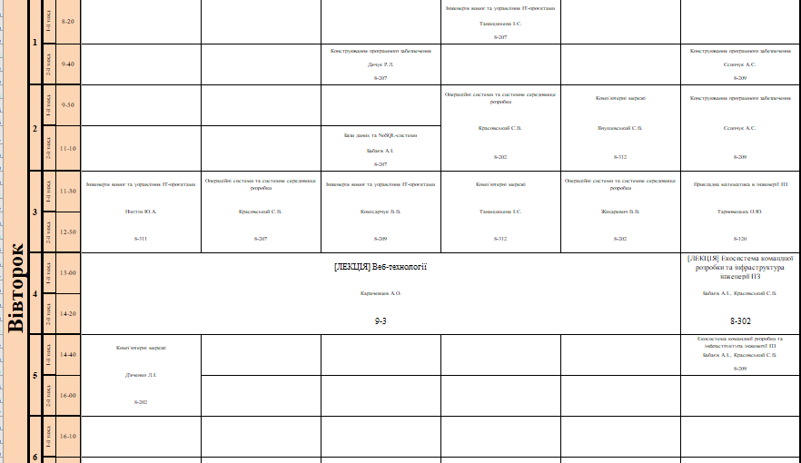
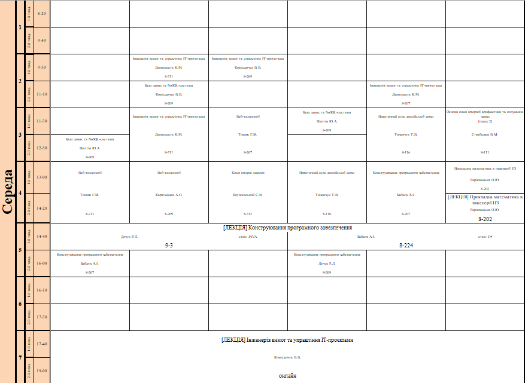
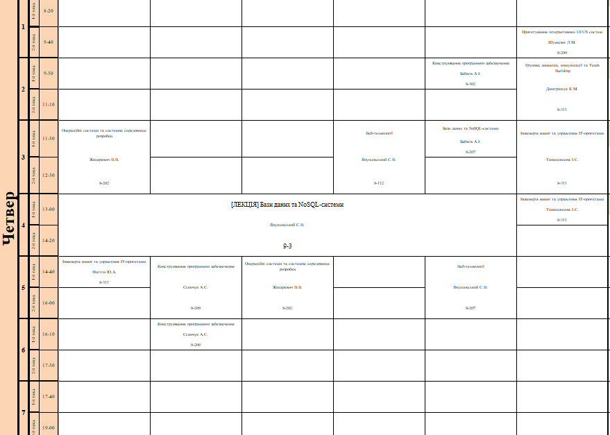
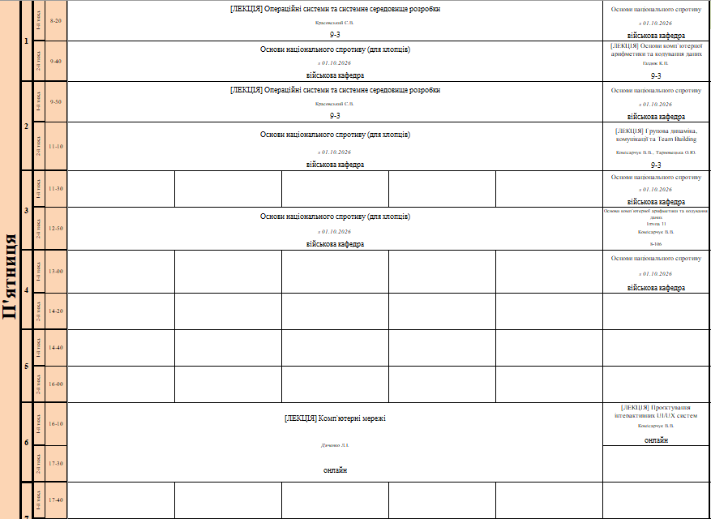
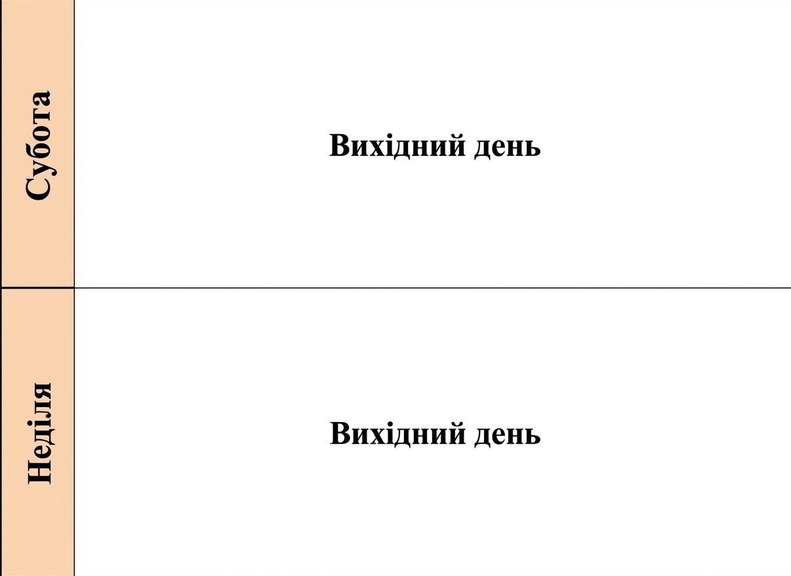

| Понеділок (Розклад за двома тижнями: 2 курс, 243А + 243Б + 243с.т.н.) | ||||||||
|---|---|---|---|---|---|---|---|---|
| Пара | Тиж. | Час | 243(1) | 243(2) | 243(3) | 243(4) | 243(5) | 243 с.т.н. |
| 1 | 1 | 8:20 - 9:40 | ||||||
| 2 | ||||||||
| 2 | 1 | 9:50 - 11:10 | Основи комп'ютерної арифметики та кодування даних (гр. 1) Комісарчук В. В. (8-106) |
|||||
| 2 | ||||||||
| 3 | 1 | 11:30 - 12:50 | Практичний курс англійської мови Цинтар Н. В. (8-211) |
Комп'ютерні мережі Танасишена І. С. (8-312) |
Практичний курс англійської мови Мудра О. В. (8-212) |
[ЛЕКЦІЯ] Дискретні структури в інженерії ПЗ Валь О. Д. (8-224) |
||
| 2 | Дискретні структури в інженерії ПЗ Валь О. Д. (8-224) |
|||||||
| 4 | 1 | 13:00 - 14:20 | Конструювання програмного забезпечення Бабаєк А. І. (8-207) |
Практичний курс англійської мови Цинтар Н. В. (8-211) |
Конструювання програмного забезпечення Дачук Р. Л. (8-202) |
Інженерія вимог та управління IT-проєктами Танасишена І. С. (8-311) |
Інженерія вимог та управління IT-проєктами Дмитращук К. М. (8-307) |
Дискретні структури в інженерії ПЗ Валь О. Д. (8-224) |
| 2 | ||||||||
| 5 | 1 | 14:40 - 16:00 |
[ЛЕКЦІЯ] Конструювання програмного забезпечення стек JAVA: Дачук Р. Л. (ауд. 9-3) | стек C#: Бабаєк А. І. (ауд. 8-224) |
|||||
| 2 | ||||||||
| 6 | 1 | 16:10 - 17:30 | Конструювання програмного забезпечення Дачук Р. Л. (8-209) |
|||||
| 2 | ||||||||

| Вівторок (Розклад за двома тижнями) | ||||||||
|---|---|---|---|---|---|---|---|---|
| Пара | Тиж. | Час | 243(1) | 243(2) | 243(3) | 243(4) | 243(5) | 243 с.т.н. |
| 1 | 1 | 8:20 - 9:40 | Інженерія вимог та управління IT-проєктами Танасишена І. С. (8-207) |
|||||
| 2 | Конструювання програмного забезпечення Дачук Р. Л. (8-207) |
Конструювання програмного забезпечення Сеничук А. С. (8-209) |
||||||
| 2 | 1 | 9:50 - 11:10 | Операційні системи та системне середовище розробки Красовський С. В. (8-202) |
Комп'ютерні мережі Янушевський С. В. (8-312) |
Конструювання програмного забезпечення Сеничук А. С. (8-209) |
|||
| 2 | Бази даних та NoSQL-системи Бабаєк А. І. (8-207) |
|||||||
| 3 | 1 | 11:30 - 12:50 | Інженерія вимог та управління IT-проєктами Нікітін Ю. А. (8-311) |
Операційні системи та системне середовище розробки Красовський С. В. (8-207) |
Інженерія вимог та управління IT-проєктами Комісарчук В. В. (8-209) |
Комп'ютерні мережі Танасишена І. С. (8-312) |
Операційні системи та системне середовище розробки Жихаревич В. В. (8-202) |
Прикладна математика в інженерії ПЗ Тарновецька О. Ю. (8-120) |
| 2 | ||||||||
| 4 | 1 | 13:00 - 14:20 |
[ЛЕКЦІЯ] Веб-технології Карачевцев А. О. (ауд. 9-3) |
[ЛЕКЦІЯ] Екосистема командної розробки та інфраструктура інженерії ПЗ Бабаєк А. І., Красовський С. В. (8-302) |
||||
| 2 | ||||||||
| 5 | 1 | 14:40 - 16:00 | Комп'ютерні мережі Дяченко Л. І. (8-202) |
Екосистема командної розробки та інфраструктура інженерії ПЗ Бабаєк А. І., Красовський С. В. (8-209) |
||||
| 2 | ||||||||

| Середа (Розклад за двома тижнями) | ||||||||
|---|---|---|---|---|---|---|---|---|
| Пара | Тиж. | Час | 243(1) | 243(2) | 243(3) | 243(4) | 243(5) | 243 с.т.н. |
| 2 | 1 | 9:50 - 11:10 | Інженерія вимог та управління IT-проєктами Дмитращук К. М. (8-311) |
Інженерія вимог та управління IT-проєктами Комісарчук В. В. (8-209) |
||||
| 2 | Бази даних та NoSQL-системи Комісарчук В. В. (8-209) |
Інженерія вимог та управління IT-проєктами Дмитращук К. М. (8-207) |
||||||
| 3 | 1 | 11:30 - 12:50 | Інженерія вимог та управління IT-проєктами Дмитращук К. М. (8-311) |
Веб-технології Томюк Г. М. (8-207) |
Бази даних та NoSQL-системи Нікітін Ю. А. (8-209) |
Практичний курс англійської мови Томенчук Т. В. (8-116) |
Основи комп'ютерної арифметики та кодування даних (гр. 2) Стребежев В. М. (8-111) |
|
| 2 | Бази даних та NoSQL-системи Нікітін Ю. А. (8-209) |
|||||||
| 4 | 1 | 13:00 - 14:20 | Веб-технології Томюк Г. М. (8-213) |
Веб-технології Карачевцев А. О. (8-209) |
Комп'ютерні мережі Янушевський С. В. (8-312) |
Практичний курс англійської мови Томенчук Т. В. (8-116) |
Конструювання програмного забезпечення Бабаєк А. І. (8-207) |
Прикладна математика в інженерії ПЗ Тарновецька О. Ю. (8-202) |
| 2 | [ЛЕКЦІЯ] Прикладна математика в інженерії ПЗ Тарновецька О. Ю. (8-202) |
|||||||
| 5 | 1 | 14:40 - 16:00 |
[ЛЕКЦІЯ] Конструювання програмного забезпечення стек JAVA: Дачук Р. Л. (ауд. 9-3) | стек C#: Бабаєк А. І. (ауд. 8-224) |
стек C# | ||||
| 2 | Конструювання програмного забезпечення Бабаєк А. І. (8-207) |
Конструювання програмного забезпечення Дачук Р. Л. (8-209) |
||||||
| 7 | 1 | 17:40 - 19:00 |
[ЛЕКЦІЯ] Інженерія вимог та управління IT-проєктами Комісарчук В. В. (онлайн) |
|||||
| 2 | ||||||||

| Четвер (Розклад за двома тижнями) | ||||||||
|---|---|---|---|---|---|---|---|---|
| Пара | Тиж. | Час | 243(1) | 243(2) | 243(3) | 243(4) | 243(5) | 243 с.т.н. |
| 1 | 1 | 8:20 - 9:40 | ||||||
| 2 | Проєктування інтерактивних UI/UX систем Шумилик Л. М. (8-209) |
|||||||
| 2 | 1 | 9:50 - 11:10 | Конструювання програмного забезпечення Бабаєк А. І. (8-202) |
Групова динаміка, комунікації та Team Building Дмитращук К. М. (8-311) |
||||
| 2 | ||||||||
| 3 | 1 | 11:30 - 12:50 | Операційні системи та системне середовище розробки Жихаревич В. В. (8-202) |
Веб-технології Янушевський С. В. (8-112) |
Бази даних та NoSQL-системи Бабаєк А. І. (8-207) |
Інженерія вимог та управління IT-проєктами Танасишена І. С. (8-311) |
||
| 2 | ||||||||
| 4 | 1 | 13:00 - 14:20 |
[ЛЕКЦІЯ] Бази даних та NoSQL-системи Янушевський С. В. (ауд. 9-3) |
Інженерія вимог та управління IT-проєктами Танасишена І. С. (8-311) |
||||
| 2 | ||||||||
| 5 | 1 | 14:40 - 16:00 | Інженерія вимог та управління IT-проєктами Нікітін Ю. А. (8-311) |
Конструювання програмного забезпечення Сеничук А. С. (8-209) |
Операційні системи та системне середовище розробки Жихаревич В. В. (8-202) |
Веб-технології Янушевський С. В. (8-207) |
||
| 2 | ||||||||
| 6 | 1 | 16:10 - 17:30 | Конструювання програмного забезпечення Сеничук А. С. (8-209) |
|||||
| 2 | ||||||||

| П'ятниця (Розклад за двома тижнями) | ||||||||
|---|---|---|---|---|---|---|---|---|
| Пара | Тиж. | Час | 243(1) | 243(2) | 243(3) | 243(4) | 243(5) | 243 с.т.н. |
| 1 | 1 | 8:20 - 9:40 | [ЛЕКЦІЯ] Операційні системи та системне середовище розробки Красовський С. В. (ауд. 9-3) |
Основи національного спротиву з 01.10.2026 (військова кафедра) |
||||
| 2 | Основи національного спротиву (для хлопців) з 01.10.2026 (військова кафедра) | [ЛЕКЦІЯ] Основи комп'ютерної арифметики та кодування даних Палагнюк К. П. (ауд. 9-3) |
||||||
| 2 | 1 | 9:50 - 11:10 | [ЛЕКЦІЯ] Операційні системи та системне середовище розробки Красовський С. В. (ауд. 9-3) |
Основи національного спротиву з 01.10.2026 (військова кафедра) |
||||
| 2 | Основи національного спротиву (для хлопців) з 01.10.2026 (військова кафедра) | [ЛЕКЦІЯ] Групова динаміка, комунікації та Team Building Комісарчук В. В., Тарновецька О. Ю. (ауд. 9-3) |
||||||
| 3 | 1 | 11:30 - 12:50 | Основи національного спротиву з 01.10.2026 (військова кафедра) |
|||||
| 2 | Основи національного спротиву (для хлопців) з 01.10.2026 (військова кафедра) | Основи комп'ютерної арифметики та кодування даних (гр. 1) Комісарчук В. В. (8-106) |
||||||
| 4 | 1 | 13:00 - 14:20 | Основи національного спротиву з 01.10.2026 (військова кафедра) |
|||||
| 2 | ||||||||
| 6 | 1 | 16:10 - 17:30 |
[ЛЕКЦІЯ] Комп'ютерні мережі Дяченко Л. І. (онлайн) |
[ЛЕКЦІЯ] Проєктування інтерактивних UI/UX систем Комісарчук В. В. (онлайн) |
||||
| 2 | ||||||||

| Субота (Розклад вільного часу студента) | |
|---|---|
| Час | Плани / Активності |
| 10:00 – 14:00 | Власні пет-проєкти, читання документації, виконання практичних робіт |
| 15:00 – 19:00 | Спорт, прогулянка містом, зустріч із друзями |
| 20:00 – 22:30 | Перегляд фільму, відпочинок |

| Неділя (Розклад вільного часу студента) | |
|---|---|
| Час | Плани / Активності |
| 11:00 – 15:00 | Відпочинок на свіжому повітрі, хобі, творчість |
| 16:00 – 20:00 | Підготовка до навчального тижня, повторення лекцій |
| 20:00 – 22:00 | Планування завдань у трекері, відпочинок |